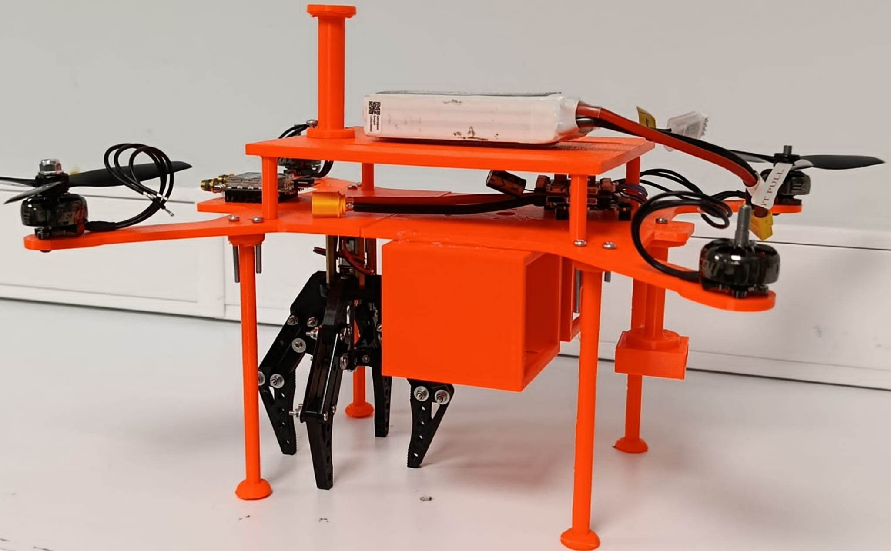
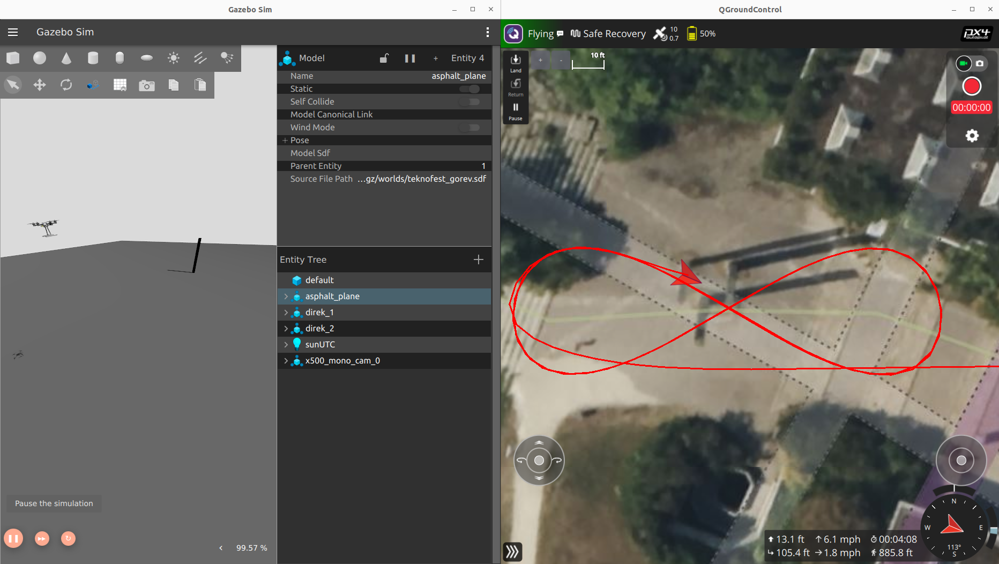
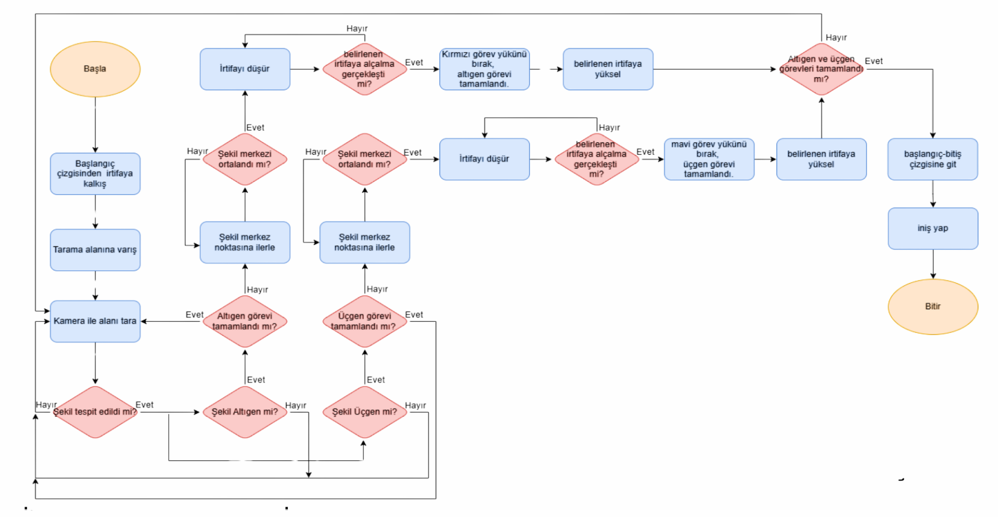
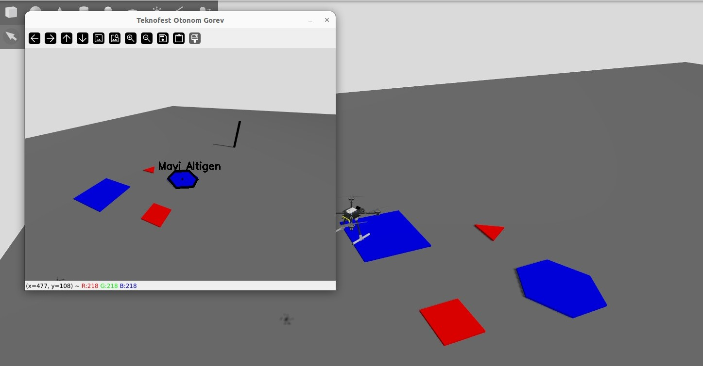
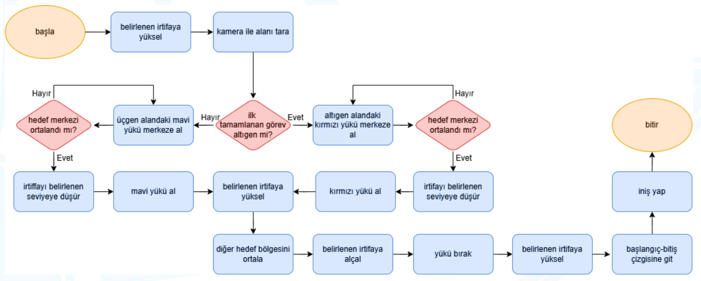
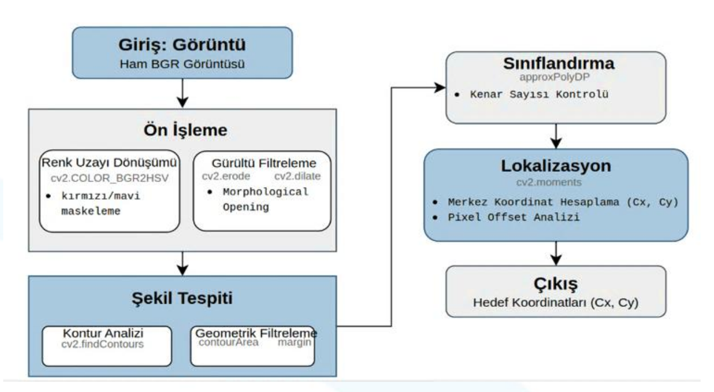

This project outlines the software architecture, autonomous mission logic, and computer vision pipeline developed for the IZU IHA quadrotor, competing in the Teknofest International UAV Competition. As the Software Lead, my primary focus was establishing a robust MAVSDK-based control layer over PX4 Autopilot, enabling the UAV to perform complex mathematical flight paths, real-time geometric shape detection using OpenCV, and precision payload interactions without human intervention.
While my core work was in software, the physical platform dictates the algorithmic constraints. The UAV is an H-configuration quadrotor built on a 3mm CNC-cut carbon fiber main plate. It features a maximum takeoff weight of 2460g, a flight time of 7 minutes, and cruises at 10 m/s. The avionics stack relies on a MicoAir743 V2 flight controller and a Raspberry Pi 5 mission computer, with RTK GPS and RFD900x telemetry ensuring centimeter-level positioning and secure ground links. The physical actuators include a servo-driven drop mechanism and a PWM-controlled robotic claw.

The system's intelligence is distributed across a three-tier architecture: the Flight Controller (MicroAir743), the Mission Computer (Raspberry Pi 5), and the Ground Control Station (QGC).
The competition required three progressive autonomous missions. All logic was rigorously tested in a PX4 Software In The Loop (SITL) environment paired with Gazebo before physical flight.
The first mission required flying a precise "8" pattern. Instead of hardcoding waypoints, I developed a mathematical trajectory algorithm based on sine and cosine functions. This dynamic generation ensures the UAV traces a perfectly smooth curve while automatically adjusting its yaw heading to face the direction of travel. The algorithm was fully validated in Gazebo.

Mission 2 involved scanning an area, identifying targets, and dropping payloads. The logic operates asynchronously: the UAV takes off to a predefined altitude and begins a camera sweep. Once a target is visually confirmed, the UAV identifies the shape's center, moves to that specific location, and triggers the "Magnet" mode. In this mode, the drone descends and waits for a payload release simulation. After the servo releases the payload, the target's flag is marked as complete, and the drone ascends to resume scanning for the next geometric shape. A robust failsafe layer monitors the state to prevent infinite loops.


The bonus mission demanded precision manipulation. The UAV stores the coordinates of the first dropped payload. It navigates back to the coordinates, where the vision system takes over to center the drone over the object. Because the camera and the physical claw are not aligned on the Z-axis, my software applies a rigid offset correction (15cm horizontally, 6.8cm vertically). The Pi then sends a PWM signal to the claw's N20 DC motor driver to grasp the object, transports it to the second target, and releases it.

To detect the specified targets—a red triangle and a blue hexagon—I built a lightweight image processing pipeline using OpenCV and NumPy optimized for the Raspberry Pi 5.
findContours algorithm isolates objects. I classify the shapes by calculating their vertex count: 3 vertices confirm the red triangle, and 6 vertices confirm the blue hexagon.